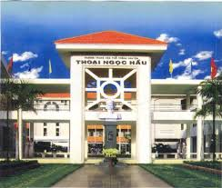

Trường THPT Chuyên Thoại Ngọc Hầu được thành lập:Vào năm 1948, trên mảnh đất Long Xuyên, một ngôi trường bằng tre lá rất đơn sơ mang tên “Collège de Long Xuyên” đã ra đời. Mái trường ấy chỉ có hai phòng học với chương trình dạy bằng tiếng Pháp. Hai năm sau, trường chuyển sang dạy chương trình bằng tiếng Việt. Năm 1952, trường được mang tên Thoại Ngọc Hầu – vị tướng tài ba đã có công khai phá, mở mang vùng đất An Giang.
Chương trình học: Trường cung cấp chương trình học phong phú, bao gồm các môn học chính như Toán, Văn, Anh, Lý, Hóa, Sinh và các môn nghệ thuật, thể dục thể thao. Chúng tôi cũng chú trọng đến việc giáo dục kỹ năng sống cho học sinh thông qua các hoạt động ngoại khóa và dự án cộng đồng.
Đội ngũ giáo viên: Đội ngũ giáo viên tại trường đều là những người có kinh nghiệm và chuyên môn cao, nhiều người trong số họ đã có những thành tích nổi bật trong giảng dạy và nghiên cứu. Họ không chỉ truyền đạt kiến thức mà còn là những người hướng dẫn, động viên học sinh phát triển khả năng của mình.
Cơ sở vật chất: Trường có cơ sở vật chất hiện đại với phòng học rộng rãi, đầy đủ thiết bị dạy học. Các phòng thí nghiệm, thư viện, và khu thể thao được trang bị tốt để phục vụ cho việc học tập và rèn luyện thể chất của học sinh.
Hoạt động ngoại khóa: Nhà trường tổ chức nhiều hoạt động ngoại khóa phong phú như câu lạc bộ nghệ thuật, thể thao, khoa học, và tình nguyện. Những hoạt động này không chỉ giúp học sinh phát triển kỹ năng mềm mà còn xây dựng tinh thần đồng đội và trách nhiệm.